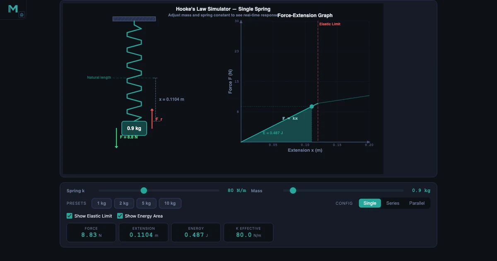
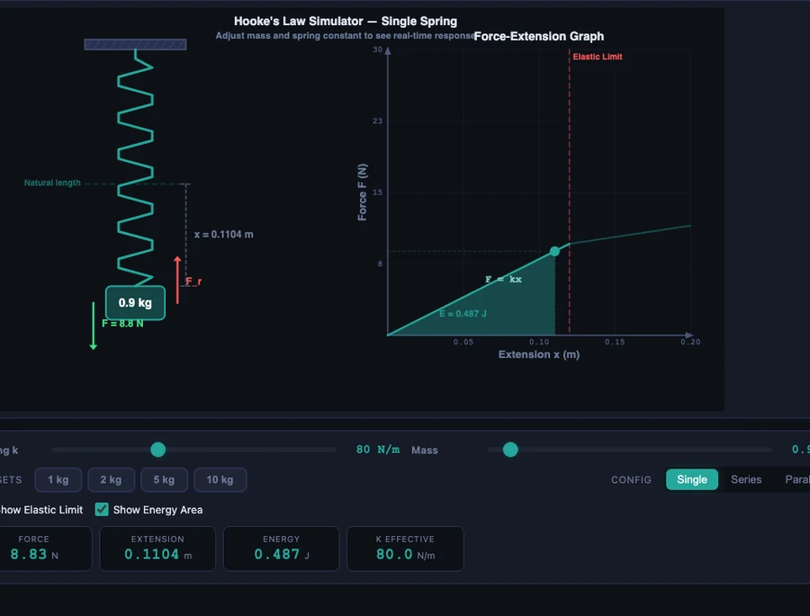

Hooke’s Law and the Spring Constant — What F = kx Really Means

- Hooke’s Law states that spring force is proportional to extension: F = kx, where k is the spring constant (N/m) and x is the extension from natural length (m).
- The spring constant k measures stiffness — it is the design input, while force and extension are outputs; springs combine as k_eff = k₁ + k₂ in parallel (stiffer) and 1/k_eff = 1/k₁ + 1/k₂ in series (softer).
- Elastic potential energy stored in a spring is E_p = ½kx², the triangular area under the F-x graph, valid only up to the elastic limit.
Ask a class of first-year engineering students to write down Hooke’s Law and every hand goes up. F = kx, done. Then point to two springs on the bench — one wound tight, one loose — and ask which one is stiffer. Silence. The formula is memorised. The variable k is not. That gap between writing an equation and understanding what it means is exactly where most learning stops, and where a good spring simulator begins.
A Hooke’s Law simulator makes k visible. Drag the mass slider and watch the spring extend. Change the spring constant and watch the same mass drop further or barely move. Switch between single, series, and parallel configurations and the effective stiffness updates instantly. The simulator covers the full Hooke’s Law curriculum — F = kx, elastic PE, series and parallel combinations, and the elastic limit — with live readouts, an F-x graph, and three learning modes.
Why the Spring Constant Matters More Than the Formula
Here is something that rarely gets said in a first lecture: in Hooke’s Law, F and x are the output. The spring constant k is the input — the thing the engineer actually chooses, designs for, and controls. Force and extension are just consequences of loading a spring with a known k. Get k wrong in a design and the spring either barely deflects under load or collapses.
The range of k values in real engineering is enormous. A clock hairspring might have k ≈ 0.001 N/m. A pen clip spring sits around k ≈ 5 N/m. A car suspension spring is typically k ≈ 25,000–40,000 N/m. A valve spring in an engine can reach k ≈ 50,000 N/m. The formula F = kx is the same for all of them. The physics is entirely different, because k is different by seven orders of magnitude.
What determines k? For a helical coil spring it is the wire diameter, the coil diameter, the number of active coils, and the shear modulus of the material. Change any one of those and k changes. An engineer specifying a spring for a product does not just write “stiff enough” — they calculate the target k from the force and deflection requirements, then back-calculate the geometry to achieve it. Hooke’s Law is the bridge between the geometry and the performance.
F = kx — What Each Variable Actually Means
The extension form of the law relates the magnitude of the applied force to the resulting displacement:
\[F = k \times x\]
The restoring-force form adds a sign, capturing the direction:
\[F = -k \times x\]
The negative sign is not cosmetic. It says the spring always pushes or pulls back toward its natural length — opposite to whatever direction it was displaced. Stretch it right, the restoring force acts left. Compress it left, the restoring force acts right. That sign is what makes oscillation possible: the spring constantly corrects itself, overshoots, and corrects again.
Each variable carries real physical meaning. F is the force in Newtons — for a hanging mass this is simply weight, F = mg. k is the spring constant in N/m, a measure of stiffness: a spring with k = 200 N/m needs twice the force to produce the same extension as one with k = 100 N/m. x is the extension in metres, measured from the natural (unstretched) length, not from some arbitrary reference point.
In the hero image above the simulator has k = 80 N/m and a 0.9 kg load. The readouts confirm F = 0.9 × 9.81 = 8.83 N, extension x = 8.83 / 80 = 0.1104 m. No rearranging required — the simulator does it live so students can focus on what the numbers mean rather than how to compute them.
One practical boundary every student needs to know: the elastic limit. Up to a certain force the spring obeys Hooke’s Law exactly — the F-x graph is a straight line. Beyond that limit the coils begin to permanently deform. Load it past the elastic limit and when you remove the weight, the spring is shorter (or longer) than it was. The F-x graph curves away from the straight line. The simulator shows this clearly: a warning appears and the graph kinks. That visual is worth ten whiteboard descriptions of what “permanent deformation” means.
Springs in Series and Parallel — When k Gets Complicated
A single spring is the simplest case. Real mechanisms frequently combine springs, and the combined stiffness is not obvious. The rules are the inverse of the resistor rules in electrical circuits — which trips up students who have just finished a circuits module and expect everything to add the same way.
Series — springs connected end to end. Each spring carries the same force but extends independently. The total extension adds up, which means the combination is softer than either spring alone:
\[\dfrac{1}{k_{\text{eff}}} = \dfrac{1}{k_1} + \dfrac{1}{k_2}\]
Two identical springs each at k = 80 N/m in series give k_eff = 40 N/m — exactly half. The same 0.9 kg load would produce twice the total extension compared to a single spring, with more energy stored in each individual coil.
Parallel — springs side by side. Both springs experience the same extension but share the force between them. The combination is stiffer:
\[k_{\text{eff}} = k_1 + k_2\]
Two springs each at k = 80 N/m in parallel give k_eff = 160 N/m. In the body image below, the same 0.9 kg load on the parallel configuration produces x = 0.0552 m — exactly half the extension of the single spring — and only 0.244 J of stored energy compared to 0.487 J. Half the deflection, half the energy, twice the stiffness. That three-way relationship is much easier to see in a side-by-side simulator comparison than on paper.
Parallel spring arrangements appear in car suspension (multiple leaf springs in a pack), in precision scales (opposing springs for linearity), and wherever a designer needs high stiffness without a single massive spring. Series arrangements appear in isolation mounts and soft-start mechanisms where a compliant first stage protects equipment from shock loads.

Elastic Potential Energy — The Triangle Under the Graph
Force and extension get most of the attention in Hooke’s Law problems. Energy storage gets less. That is backwards from an engineering standpoint, because energy is often the quantity that matters in design — how much energy can this spring absorb in a crash? How much does it release per cycle in a mechanism?
The elastic potential energy stored in a compressed or extended spring is the area of the triangle under the F-x graph:
\[E_p = \dfrac{1}{2}k x^2\]
This can be rewritten in two equivalent forms that are sometimes more convenient:
\[E_p = \dfrac{F^2}{2k} = \dfrac{1}{2}Fx\]
The \(\tfrac{1}{2}\) factor is the triangle. The force on a spring is not constant — it starts at zero and rises linearly with extension. So the average force over the extension is F/2, and average force times displacement gives the area: \(\tfrac{1}{2} \times F \times x\). Students who struggle with the energy formula often accept it immediately once they see the shaded triangle on the F-x graph and realise it is just geometry.
The energy formula has a useful design implication: for a stiffer spring (higher k), the same force stores less energy. A stiff spring deflects less for the same force, and the energy area is smaller. A softer spring deflects more, absorbs more energy per unit force. This is why crash-energy absorbers use deliberately soft progressive springs, while precision positioning systems use very stiff springs. Same formula, opposite engineering requirement.
When a mass is released from a stretched spring and there is no friction, total mechanical energy is conserved: all elastic PE converts to kinetic energy at the equilibrium position and back again — \(\tfrac{1}{2}mv^2 + \tfrac{1}{2}kx^2 = \text{constant}\). The simulator’s energy readout tracks this in real time.
How to Use the Simulator in Class and for Revision
Start with k before mass. Open the simulator and spend the first five minutes only adjusting the spring constant slider while mass is zero. Ask students to predict: if k doubles, what changes? Answer: nothing visible yet, because there is no load. Then add a mass and repeat. The same mass now deflects twice as much when k is halved. That two-step reveal makes k feel real in a way that a formula definition cannot.
Run the series-versus-parallel comparison. Keep k = 80 N/m and load = 0.9 kg throughout. Record the readouts on single (x = 0.1104 m, E = 0.487 J, k_eff = 80). Switch to parallel (x = 0.0552 m, E = 0.244 J, k_eff = 160). Switch to series (k_eff = 40 N/m, extension doubles again). Three configs, one mass value, the comparison builds itself. Students who see this side by side understand why series springs get softer before they see a single formula.
Use the F-x graph to teach the elastic limit. Increase the mass slowly past the elastic limit and watch the graph curve away from the straight line. This is the most efficient possible demonstration of the elastic limit concept — no physical spring needed, no risk of permanently deforming lab equipment, and students can see the graph change shape in real time.
Practice and Quiz modes for exam preparation. The simulator generates randomised problems across all Hooke’s Law topics: finding k from F and x, calculating extension for a given mass, working out series and parallel k_eff, computing elastic PE, and applying energy conservation. Quiz mode scores five questions with a star rating. For diploma-level revision, this is the fastest way to build the exam-speed recall that distinguishes a student who understands the material from one who can just quote the formula.
For the material-science connection — how spring stiffness at the macroscopic scale links to atomic bonding and Young’s modulus at the material level — see our companion article on reading stress-strain curves from UTM testing. The equation \(\sigma = E\varepsilon\) is Hooke’s Law for a solid material, with Young’s modulus playing exactly the role that k plays for a spring.
Try It Yourself
All tools below are free — no account, no download. Open them in a browser and start experimenting.
Key Takeaways
- Hooke’s Law \(F = kx\) describes any elastic system in its linear region — coil springs, leaf springs, rubber bands within limits, and even atoms bonded together in a solid.
- The spring constant k (in N/m) is the design variable. Force and extension are outputs. A higher k means more force is needed for the same deflection — the spring is stiffer.
- Springs in series give \(1/k_{\text{eff}} = 1/k_1 + 1/k_2\) — always softer than the weakest spring. Springs in parallel give \(k_{\text{eff}} = k_1 + k_2\) — always stiffer than the strongest spring.
- Elastic potential energy stored in a spring is \(E_p = \tfrac{1}{2}kx^2\) — the area of the triangle under the F-x graph. A stiffer spring stores less energy for the same force; a softer spring stores more.
- The elastic limit is the maximum extension at which Hooke’s Law holds. Beyond it the spring permanently deforms and the F-x relationship becomes non-linear.
- Young’s modulus is Hooke’s Law for a solid material: \(\sigma = E\varepsilon\). Young’s modulus E plays the role of k, stress plays the role of F, and strain plays the role of x.
Frequently Asked Questions
What is Hooke’s Law in simple terms?
Hooke’s Law states that the force needed to stretch or compress a spring is directly proportional to the displacement from its natural length, as long as the elastic limit is not exceeded. Written as F = kx, where k is the spring constant in N/m and x is the extension in metres.
What is the difference between springs in series and springs in parallel?
Springs in series have an effective spring constant lower than either individual spring — they are softer. The formula is 1/k_eff = 1/k₁ + 1/k₂. Springs in parallel share the load and the effective spring constant is the sum k_eff = k₁ + k₂ — they are stiffer. Two identical springs of k = 80 N/m give k_eff = 40 N/m in series but k_eff = 160 N/m in parallel.
Why does the F-x graph curve beyond the elastic limit?
Within the elastic limit the relationship between force and extension is linear — the graph is a straight line with gradient k. Beyond the elastic limit the spring begins to permanently deform. The coils yield, and more extension occurs for less additional force, so the graph curves away from the straight line. The spring does not return to its natural length when the load is removed.
How do you calculate elastic potential energy stored in a spring?
Elastic potential energy E_p = ½kx², where k is the spring constant and x is the extension. It can also be written as E_p = F²/(2k) or E_p = ½Fx, since all three are equivalent for a linear spring. Numerically, a spring with k = 80 N/m stretched by 0.1104 m stores E_p = 0.5 × 80 × 0.1104² = 0.487 J.
How does Young’s modulus relate to Hooke’s Law?
Young’s modulus is Hooke’s Law applied to a solid material rather than a coiled spring. The equation σ = Eϵ (stress = Young’s modulus × strain) is the material-level version of F = kx. Young’s modulus E plays the role of the spring constant k, but it describes the stiffness of the material itself rather than a geometric spring shape. A stiffer material has a higher E, just as a stiffer spring has a higher k.
Hooke’s Law is one of those engineering ideas that looks trivial on paper and turns out to be everywhere once you start looking for it. Vehicle suspensions, earthquake-resistant buildings, surgical instruments, atomic force microscopes — they all depend on k. The formula fits on a napkin. Understanding what k means in context takes practice, and that practice goes faster with something you can actually stretch.
The Hooke’s Law simulator is free, runs in any browser, and needs no equipment. Load a spring. Change the stiffness. Compare series and parallel. Watch the elastic limit arrive. The intuition builds in minutes rather than lab sessions.